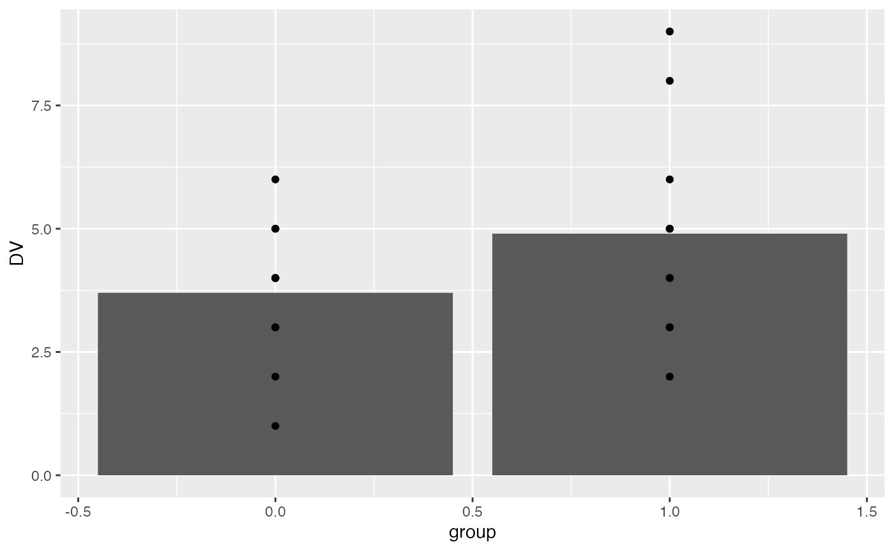
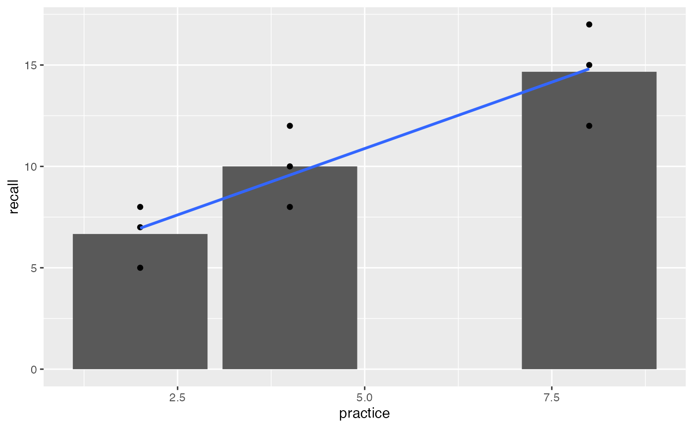
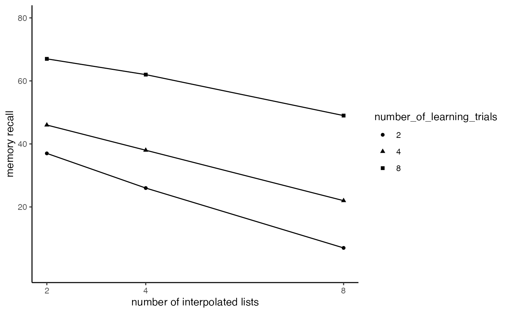
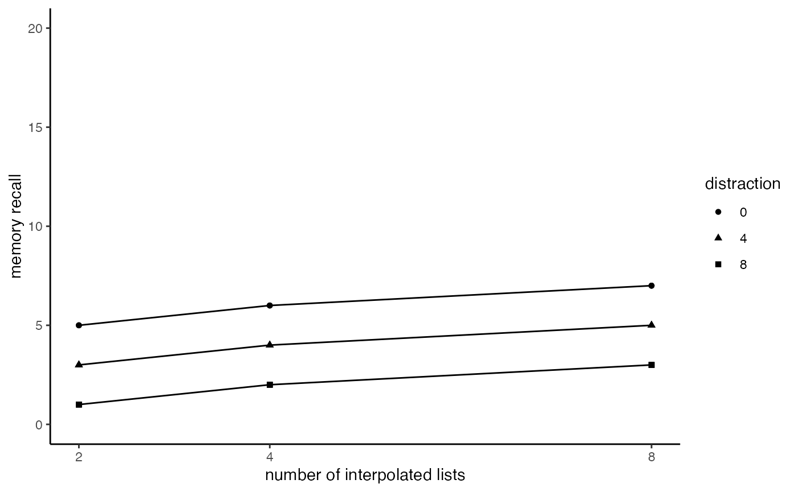

Lab2
Lab2.Rmd
#library(SemesterProjectLabII)
library(tibble)
simple_design <- tibble(group = rep(c(0,1), each=10),
DV = c(1,3,2,4,3,4,5,6,5,4,5,4,3,2,3,4,5,6,8,9))
knitr::kable(simple_design)| group | DV |
|---|---|
| 0 | 1 |
| 0 | 3 |
| 0 | 2 |
| 0 | 4 |
| 0 | 3 |
| 0 | 4 |
| 0 | 5 |
| 0 | 6 |
| 0 | 5 |
| 0 | 4 |
| 1 | 5 |
| 1 | 4 |
| 1 | 3 |
| 1 | 2 |
| 1 | 3 |
| 1 | 4 |
| 1 | 5 |
| 1 | 6 |
| 1 | 8 |
| 1 | 9 |
library(ggplot2)
ggplot(simple_design, aes(x=group, y=DV))+
geom_bar(stat = "summary", fun = "mean", position="dodge")+
geom_point()
t.test(DV~group,var.equal=TRUE,data=simple_design)
#>
#> Two Sample t-test
#>
#> data: DV by group
#> t = -1.412, df = 18, p-value = 0.175
#> alternative hypothesis: true difference in means between group 0 and group 1 is not equal to 0
#> 95 percent confidence interval:
#> -2.9854404 0.5854404
#> sample estimates:
#> mean in group 0 mean in group 1
#> 3.7 4.9
lm(DV~group, data=simple_design)
#>
#> Call:
#> lm(formula = DV ~ group, data = simple_design)
#>
#> Coefficients:
#> (Intercept) group
#> 3.7 1.2
recall_design <- tibble(practice = rep(c(2,4,8), each=3),
subjects = 1:9,
recall = c(5,7,8,
8,10,12,
12,15,17))
knitr::kable(recall_design)| practice | subjects | recall |
|---|---|---|
| 2 | 1 | 5 |
| 2 | 2 | 7 |
| 2 | 3 | 8 |
| 4 | 4 | 8 |
| 4 | 5 | 10 |
| 4 | 6 | 12 |
| 8 | 7 | 12 |
| 8 | 8 | 15 |
| 8 | 9 | 17 |
ggplot(recall_design, aes(x=practice, y=recall))+
geom_bar(stat = "summary", fun = "mean", position="dodge")+
geom_point()+
geom_smooth(method="lm", formula = y~x, se=FALSE)
summary(lm(recall~practice, data=recall_design))
#>
#> Call:
#> lm(formula = recall ~ practice, data = recall_design)
#>
#> Residuals:
#> Min 1Q Median 3Q Max
#> -2.8095 -1.5714 0.1905 1.0476 2.4286
#>
#> Coefficients:
#> Estimate Std. Error t value Pr(>|t|)
#> (Intercept) 4.3333 1.3678 3.168 0.01575 *
#> practice 1.3095 0.2585 5.066 0.00145 **
#> ---
#> Signif. codes: 0 '***' 0.001 '**' 0.01 '*' 0.05 '.' 0.1 ' ' 1
#>
#> Residual standard error: 1.934 on 7 degrees of freedom
#> Multiple R-squared: 0.7857, Adjusted R-squared: 0.7551
#> F-statistic: 25.67 on 1 and 7 DF, p-value: 0.001453question,,,
would you use questionnaire scoring in an experiment as a categorical of either High or Low,,, or is more common to use as a continuous variable for multiple regression…? I am confused on when you have multiple IV’s should you always convert one to categorical to get a better analysis?
1.(3 points) The following code roughly reproduces figure 5.5 from the textbook (Abdi et al., 2009). Modify the ggplot code so that the graph looks as close as possible to the figure from textbook: change the x-axis title change the y-axis title make the x-axis and y axis ticks the same include different symbols to differentiate the lines
slamecka_design <- tibble(number_of_learning_trials = rep(c(2,4,8), each=6),
number_of_IL = rep(rep(c(2,4,8), 2), 3),
subjects = 1:18,
recall = c(35,21,6,
39,31,8,
40,34,18,
52,42,26,
61,58,46,
73,66,52
)
)
slamecka_design$number_of_learning_trials <- as.factor(slamecka_design$number_of_learning_trials)
ggplot(slamecka_design,aes(x=number_of_IL,
group = number_of_learning_trials,
y=recall, shape= number_of_learning_trials))+
geom_line(stat = "summary", fun = "mean")+
geom_point(stat = "summary", fun = "mean")+
theme_classic()+
xlab("number of interpolated lists")+
ylab("memory recall")+
scale_y_continuous(breaks = c(20,40,60,80), limits=c(0,80))+
scale_x_continuous(breaks = c(2,4,8)) ##labels =c(“Learning Trials”),3))+ <- what i was doing for the labels on the left side of the graph
three_by_three <- tibble(reward = rep(c("0","50","1000000"),each = 9),
practice = rep(rep(c(2,4,8), each=3),
3),
distraction= as.factor(rep(c(0,4,8),9)),
recall = c(5,3,1,
6,4,2,
7,5,3,
5,3,1,
6,4,2,
7,5,3,
5,3,1,
6,4,2,
7,5,3))
ggplot(three_by_three,aes(x=practice,
group = distraction,
y=recall,
shape= distraction))+
geom_line()+
geom_point()+
theme_classic()+
xlab("number of interpolated lists")+
ylab("memory recall")+
scale_y_continuous(breaks = c(0,5,10,15,20), limits=c(0,20))+
scale_x_continuous(breaks = c(2,4,8))
facet_wrap(~reward)
#> <ggproto object: Class FacetWrap, Facet, gg>
#> compute_layout: function
#> draw_back: function
#> draw_front: function
#> draw_labels: function
#> draw_panels: function
#> finish_data: function
#> init_scales: function
#> map_data: function
#> params: list
#> setup_data: function
#> setup_params: function
#> shrink: TRUE
#> train_scales: function
#> vars: function
#> super: <ggproto object: Class FacetWrap, Facet, gg>